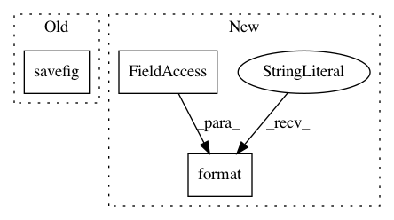

16a31e2c9fedc654e9117b42b8144adf1d0e4900,examples/reinforcement_learning/tutorial_A3C.py,,,#,259
Before Change
plt.plot(GLOBAL_RUNNING_R)
plt.xlabel("episode")
plt.ylabel("global running reward")
plt.savefig("a3c.png")
plt.show()
GLOBAL_AC.save_ckpt()
After Change
if d:
break
print(
"Testing | Episode: {}/{} | Episode Reward: {:.4f} | Running Time: {:.4f}".format(
episode + 1, TEST_EPISODES, episode_reward,
time.time() - T0))
In pattern: SUPERPATTERN
Frequency: 3
Non-data size: 3
Instances
Project Name: tensorlayer/tensorlayer
Commit Name: 16a31e2c9fedc654e9117b42b8144adf1d0e4900
Time: 2020-02-03
Author: 34995488+Tokarev-TT-33@users.noreply.github.com
File Name: examples/reinforcement_learning/tutorial_A3C.py
Class Name:
Method Name:
Project Name: pyannote/pyannote-audio
Commit Name: 2a897baa137c20ed306e17a63269aa9e15224a56
Time: 2016-12-14
Author: bredin@limsi.fr
File Name: pyannote/audio/embedding/callbacks.py
Class Name: SpeakerRecognitionValidation
Method Name: on_epoch_end
Project Name: pyannote/pyannote-audio
Commit Name: 2a897baa137c20ed306e17a63269aa9e15224a56
Time: 2016-12-14
Author: bredin@limsi.fr
File Name: pyannote/audio/embedding/callbacks.py
Class Name: SpeakerDiarizationValidation
Method Name: on_epoch_end